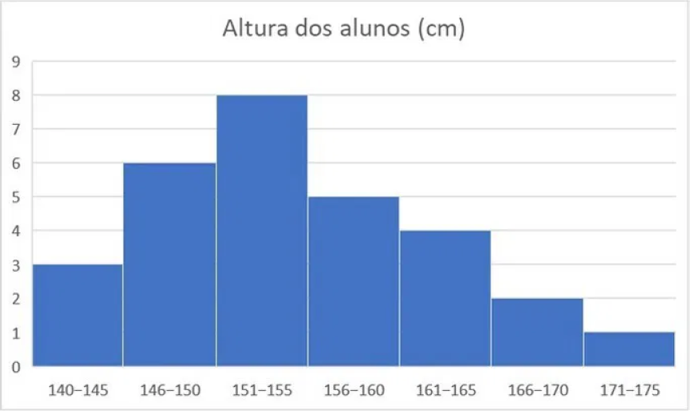

1.1 Gráficos de Barras e Pizza:
APRESENTAÇÃO
CONTEÚDO
EXERCÍCIOS PRÁTICOS
EXERCÍCIOS RESOLVIDOS
Questão 2:
As alturas dos alunos de uma turma foram registradas em centímetros e organizados no histograma abaixo.

Pela leitura do histograma podemos afirmar que
A) A maior quantidade de alunos da turma possui entre 140cm e 155 cm.
B) Há mais alunos até 155 cm do que entre 156 cm e 175 cm.
C) Há mais alunos entre 156 cm e 175 cm do que entre 140cm e 155 cm.
D) A mediana das alturas está na classe 156 cm - 160 cm.
E) A moda das alturas está na classe 156 cm - 160 cm.
⭠ VOLTAR
PRÓXIMO ⭢